🏛️ 竞逐黄金国
The Quest for El Dorado · 设计：Reiner Knizia · Ravensburger 出版 · 2–4 人 · 官方英文规则书全文翻译（12 页 · AI 辅助机翻）
本页收录《竞逐黄金国》（The Quest for El Dorado, 2017）的原版官方规则书全部 12 页（底本：Ravensburger 官方，665012.pdf），逐页随图排列，点击任意图片即可放大查看；每页下方默认折叠了该页的 AI 辅助中文机翻对照，需要时可展开。规则内容归 Ravensburger 及版权方所有，收录仅供个人学习查阅。
整理说明：机翻对照按本站术语口径对齐（牌库/手牌/回合/轮/板块/指示物等），PDF 图文混排页的语序可能与原书视觉顺序略有出入；规则细节请一律以页面上方原书页面为准。
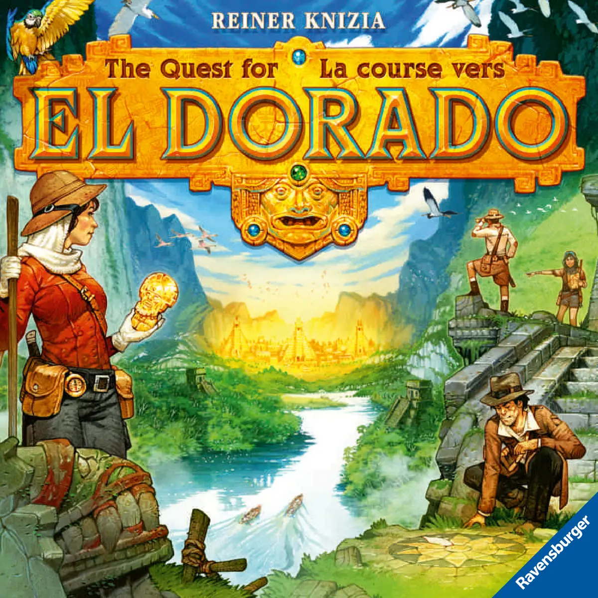
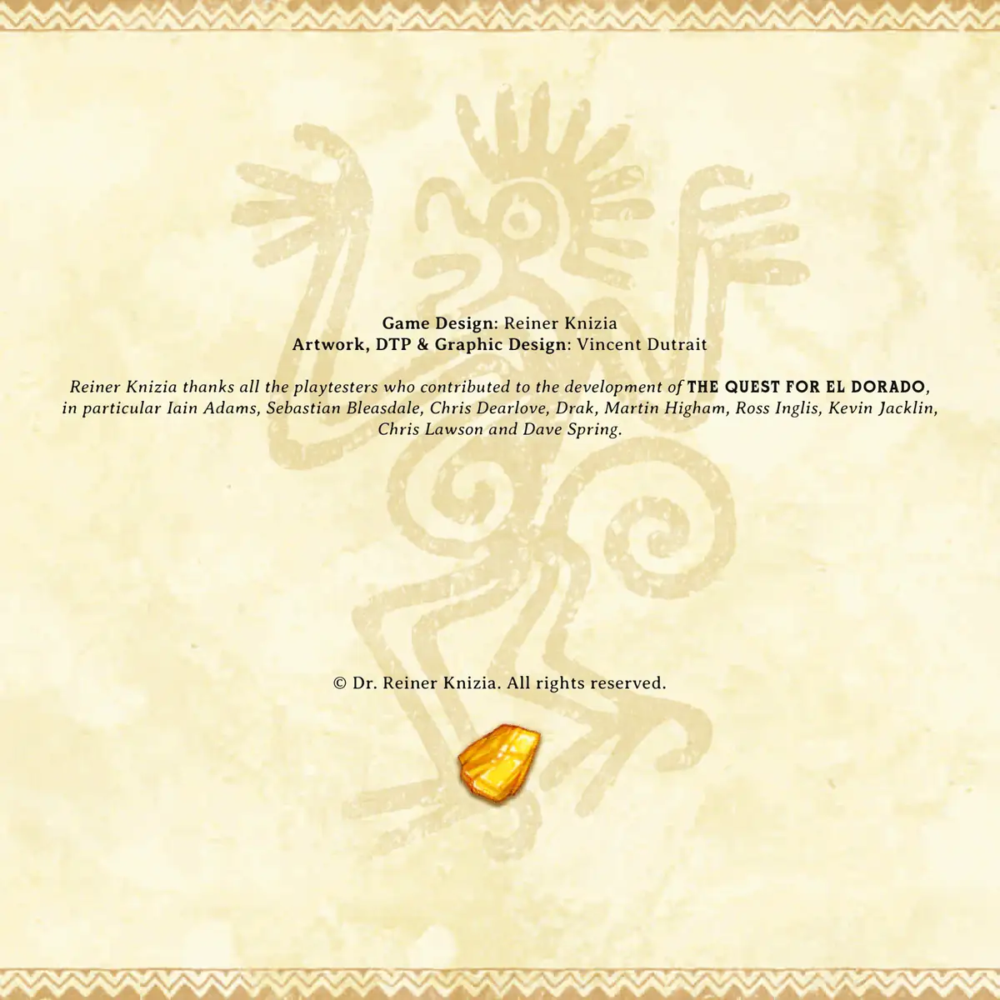
📝 第 2 页 AI 机翻对照（点击展开）
游戏设计：Reiner Knizia
美术、排版与平面设计：Vincent Dutrait
Reiner Knizia 感谢所有为《黄金城大冒险》(THE QUEST FOR EL DORADO) 开发做出贡献的测试玩家，
特别是 Iain Adams、Sebastian Bleasdale、Chris Dearlove、Drak、Martin Higham、Ross Inglis、Kevin Jacklin、
Chris Lawson 和 Dave Spring。
© Dr. Reiner Knizia. 保留所有权利。
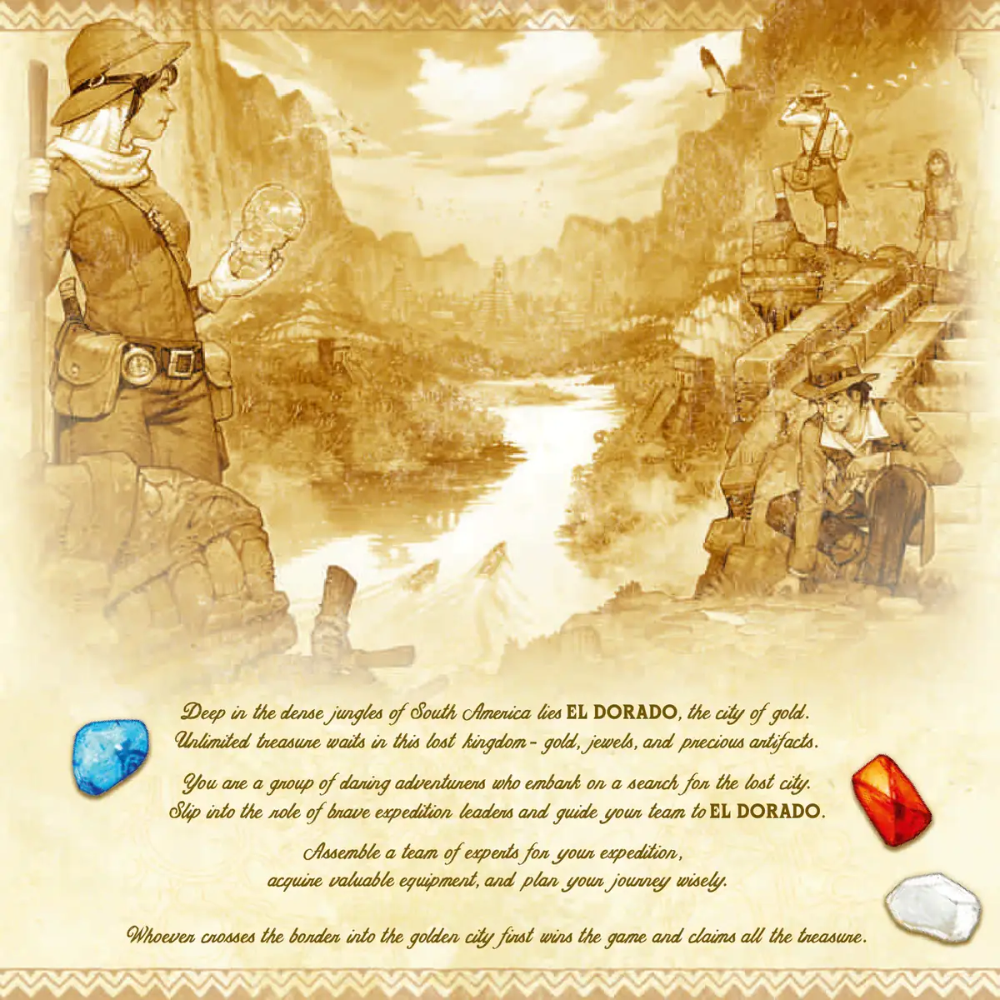
📝 第 3 页 AI 机翻对照（点击展开）
在南美洲茂密的丛林深处，坐落着黄金城(EL DORADO)，这座黄金之城。
在这座失落王国中，无尽的宝藏等待着——黄金、珠宝和珍贵的文物。
你们是一群大胆的冒险家，踏上了寻找这座失落城市的旅程。
扮演勇敢的探险队领导者，带领你的团队前往黄金城。
为你的探险组建一支专家团队，
获取宝贵的装备，并明智地规划你的旅程。
第一个跨越边境进入黄金城的玩家赢得游戏并获取所有宝藏。
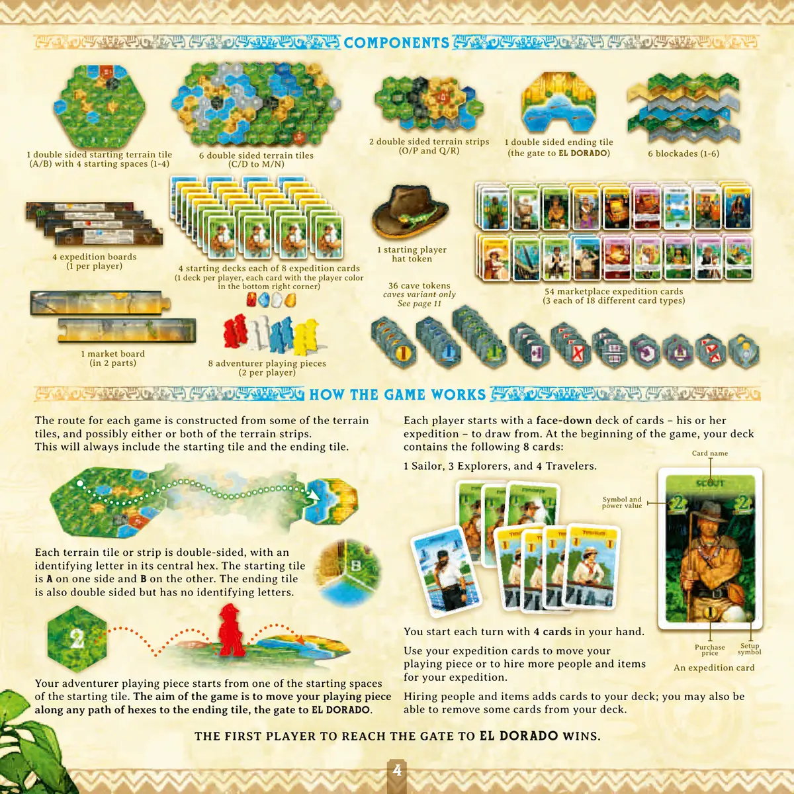
📝 第 4 页 AI 机翻对照（点击展开）
每局游戏的路线由一些地形板块构成，可能还包括一条或两条地形带。
这总是包括起始板块和结束板块。
每个地形板块或地形带都是双面的，其中央六边形有一个标识字母。起始板块
一面是 A，另一面是 B。结束板块也是双面的，但没有标识字母。
你的冒险家棋子从起始板块的一个起始空间开始。游戏的目标是沿着任何六边形路径移动你的棋子
到结束板块，即通往黄金城的大门。
每个玩家开始时有一张面朝下的牌库——他或她的探险牌库，从中抽牌。游戏开始时，你的牌库
包含以下 8 张牌：
1 水手，3 探险家，和 4 旅行者。
每个回合开始时，你手中有 4 张牌。
使用你的探险牌来移动你的
棋子，或为你的探险队雇佣更多人员和物品。
雇佣人员和物品会向你的牌库添加牌；你也可以
能够从你的牌库中移除一些牌。
卡牌名称
符号和
力量值
购买
价格
设置
符号
一张探险牌
组件
游戏如何运作
第一个到达黄金城大门的玩家获胜。
1 个双面起始地形板块
(A/B)，带有 4 个起始空间 (1-4)
6 个双面地形板块
(C/D 到 M/N)
2 个双面地形带
(O/P 和 Q/R)
1 个双面结束板块
(黄金城大门)
6 个路障 (1-6)
1 个市场版图
(2 个部分)
4 个探险版图
(每位玩家 1 个)
8 个冒险家棋子
(每位玩家 2 个)
1 个起始玩家
帽子指示物
4 个起始牌库，每个 8 张探险牌
(每位玩家 1 个牌库，每张牌右下角有玩家颜色)
54 张市场探险牌
(18 种不同类型，每种 3 张)
36 个洞穴指示物
仅限洞穴变体
参见第 11 页
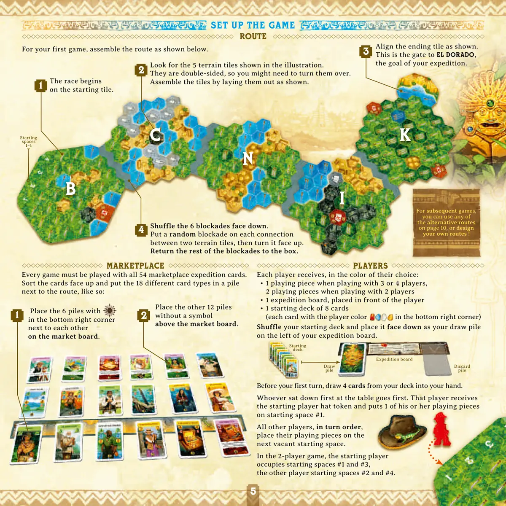
📝 第 5 页 AI 机翻对照（点击展开）
路线
对于你的第一局游戏，按照下图组装路线。
设置游戏
市场
每局游戏必须使用全部54张市场探险卡牌。
将卡牌正面朝上分类，把18种不同类型的卡牌叠成一堆，
放在路线旁边，如下所示：
玩家
每位玩家选择自己颜色后获得：
• 当3或4人游戏时，获得1个棋子；当2人游戏时，获得2个棋子
• 1个探险版图，放在玩家面前
• 1副起始牌库，共8张牌
（每张牌的右下角有玩家颜色）
比赛从起始板块开始。
找出图中显示的5个地形板块。
它们是双面的，所以你可能需要翻面。
按照图示组装板块。
按照图示对齐结束板块。
这是通往黄金国(EL DORADO)的大门，
是你探险的目标。
将6个路障牌背面朝下洗混。
在每个地形板块之间的连接处随机放置一个路障，然后翻面。
将剩余的路障牌放回盒中。
起始
空间1-4
对于后续游戏，
你可以使用第10页上的
任何替代路线，
或者设计你自己的路线！
将6个带有
右下角符号的牌堆
并排放在市场版图旁边。
将另外12个没有符号的牌堆
放在市场版图上方。
将起始牌库洗混，背面朝下作为你的牌库，
放在你探险版图的左侧。
起始
牌库
探险版图
摸牌堆
弃牌堆
在你的第一个回合前，从你的牌库中摸4张牌到手牌。
谁先坐在桌旁谁就先手。该玩家获得起始玩家标记，并将他或她的一个棋子放在起始空间#1上。
其他玩家按顺序轮流，
将他们的棋子放在下一个
空的起始空间上。
在2人游戏中，起始玩家
占据起始空间#1和#3，
另一玩家占据起始空间#2和#4。
B
C
N
I
K
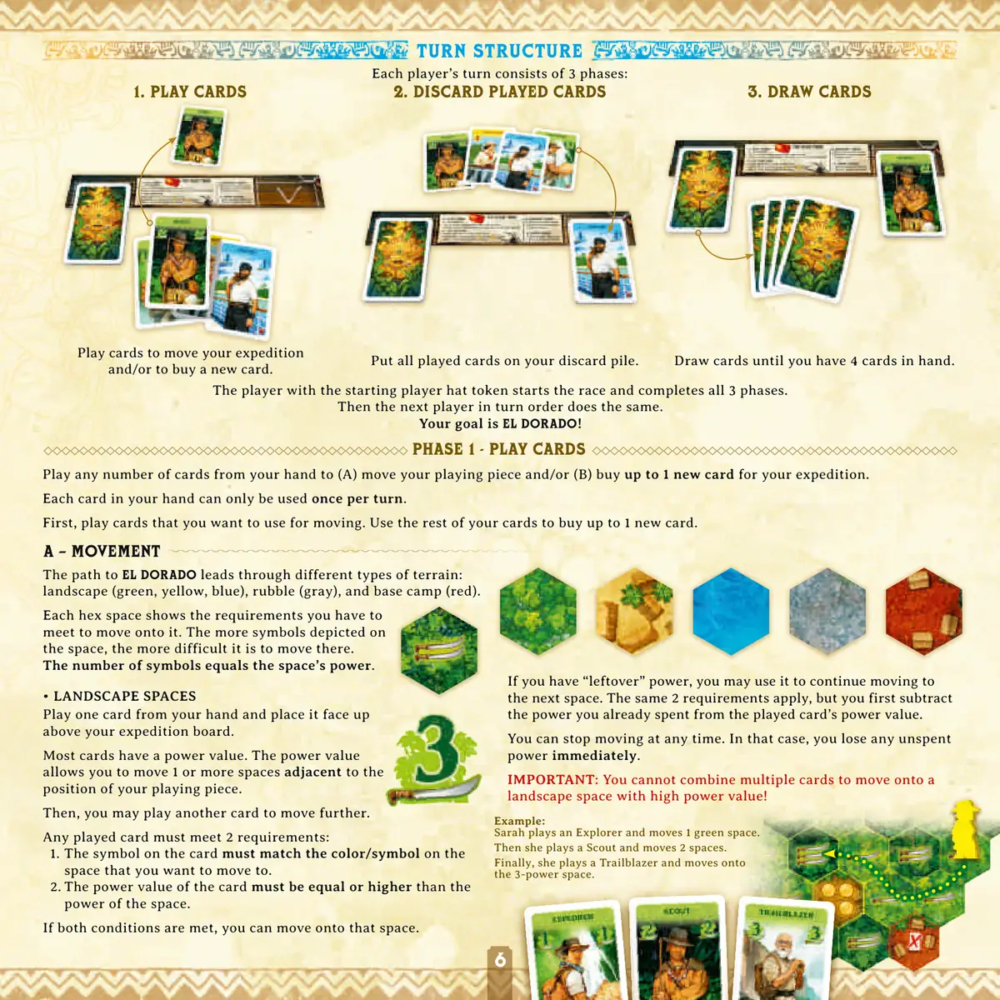
📝 第 6 页 AI 机翻对照（点击展开）
每位玩家的回合包含3个阶段：
回合结构
1. 出牌
2. 弃置已出牌
3. 摸牌
出牌来移动你的探险队
和/或购买一张新卡牌。
将所有已出牌放在你的弃牌堆上。
摸牌直到你手中有4张牌。
拥有起始玩家帽指示物的玩家开始比赛并完成全部3个阶段。
然后按回合顺序的下一位玩家做同样的事情。
你的目标是黄金国（EL DORADO）！
第1阶段 - 出牌
通往黄金国（EL DORADO）的道路穿过不同类型的地形：
景观（绿色、黄色、蓝色）、废墟（灰色）和基地营地（红色）。
每个六边形格显示了你必须
满足才能移动到那里的要求。格上显示的符号越多，
移动到那里就越困难。
符号数量等于该格的力量值。
A - 移动
从你手中打出一张牌，正面朝上
放在你的探险版图上方。
大多数牌都有力量值。力量值
允许你移动到你的棋子位置相邻的1个或多个格。
然后，你可以再出一张牌继续移动。
任何已出的牌必须满足2个要求：
1. 牌上的符号必须与你想要移动到的格的颜色/符号相匹配。
2. 牌的力量值必须大于或等于该格的力量值。
如果两个条件都满足，你可以移动到那个格。
如果你有"剩余"力量，你可以用它继续移动到下一个格。同样的两个条件适用，但你首先需要从已出牌的力量值中减去你已经使用的力量。
你可以在任何时候停止移动。在这种情况下，你立即失去所有未使用的力量。
重要：你不能组合多张牌来移动到高力量值的景观格！
示例：
莎拉打出一张探险者牌，移动1个绿色格。
然后她打出一张侦察兵牌，移动2个格。
最后，她打出一张开路先锋牌，移动到
力量值为3的格。
• 景观格
从你手中出任意数量的牌来（A）移动你的棋子和/或（B）为你的探险队购买最多1张新牌。
你手中的每张牌每回合只能使用一次。
首先，出你想要用于移动的牌。用剩下的牌购买最多1张新牌。
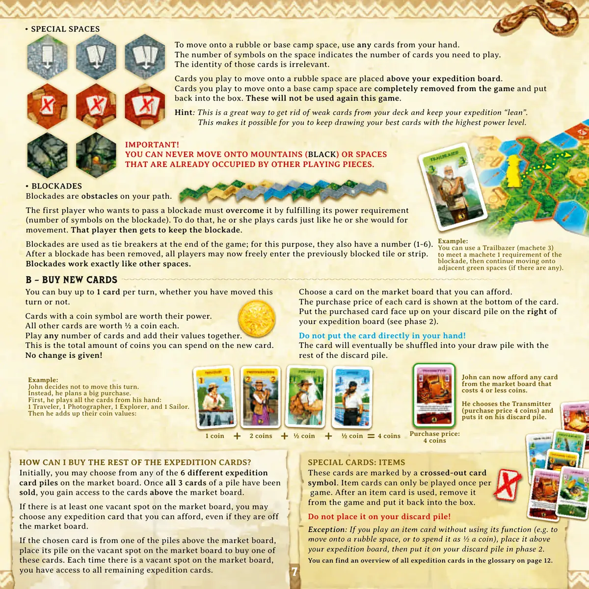
📝 第 7 页 AI 机翻对照（点击展开）
• 特殊区域
要移动到废墟或营地区域，使用你手牌中的任意卡牌。
区域上的符号数量表示你需要打出的卡牌数量。
这些卡牌的身份无关紧要。
打出卡牌以移动到废墟区域的，将这些卡牌放置在你的探险版图上方。
打出卡牌以移动到营地区域的，这些卡牌会从游戏中完全移除并放回盒中。
这些卡牌在本游戏中将不再使用。
提示：这是清除你牌库中弱牌并保持你的探险"精简"的好方法。
这使你能够持续摸到最高强度值的最佳卡牌。
重要！
你永远不能移动到山脉（黑色）区域或已被其他棋子占据的区域。
• 路障
路障是你路径上的障碍。
第一个想要通过路障的玩家必须通过满足其强度要求（路障上的符号数量）来克服它。
为此，他或她像移动一样打出卡牌。然后该玩家可以保留该路障。
路障在游戏结束时用作决胜工具；为此，它们也有一个数字（1-6）。
路障被移除后，所有玩家现在可以自由进入之前被阻挡的板块或条带。
路障的工作方式与其他区域完全相同。
示例：
你可以使用一名开拓者（砍刀3）
来满足路障的砍刀1要求，然后继续移动到相邻的绿色区域（如果有）。
你每回合最多可以购买1张卡牌，无论你本回合是否移动过。
带有硬币符号的卡牌价值等于其强度值。
所有其他卡牌价值各为半个硬币。
打出任意数量的卡牌并将它们的价值相加。
这就是你可以用于购买新卡牌的总金币数。
不找零！
选择你能够负担得起的市场版图上的卡牌。
每张卡牌的购买价格显示在卡牌底部。
将购买的卡牌正面朝上放置在你探险版图右侧的弃牌堆上（见第2阶段）。
不要将卡牌直接放入你的手牌！
该卡牌最终会与弃牌堆的其他卡牌一起洗入你的摸牌堆中。
B – 购买新卡牌
示例：
约翰决定本回合不移动。
相反，他计划进行一次大采购。
首先，他打出了手牌中的所有卡牌：
1名旅行者、1名摄影师、1名探险家和1名水手。
然后他计算它们的金币价值：
约翰现在可以负担得起
市场版图上价格
为4或更少金币的任何卡牌。
他选择了发射器
（购买价格4金币）并将其放在他的弃牌堆上。
我如何购买剩余的探险卡牌？
最初，你可以从市场版图上的6种不同的探险卡牌堆中选择任意一种。
一旦某个卡牌堆的所有3张卡牌都被
售出后，你将获得市场版图上方卡牌的获取权限。
如果市场版图上至少有一个空位，你可以选择任何你能够负担的探险卡牌，即使它们不在市场版图上。
如果所选卡牌来自市场版图上方的某个牌堆，将该牌堆放置在市场版图的空位上，以购买这些卡牌中的一张。每当市场版图上有一个空位时，你就可以获取所有剩余的探险卡牌。
1 个硬币
2 个硬币
½ 个硬币
½ 个硬币
购买价格：
4 个硬币
+
+
+
= 4 个硬币
特殊卡牌：物品
这些卡牌标记有一个划掉的卡牌符号。物品卡牌每局游戏只能使用一次。物品卡牌使用后，将其从游戏中移除并放回盒中。不要将其放在你的弃牌堆上！
例外：如果你使用物品卡牌但没有使用其功能（例如，移动到废墟格，或将其作为 ½ 个硬币花费），将其放置在你的探险版图上方，然后在第 2 阶段将其放在你的弃牌堆中。
你可以在第 12 页的术语表中找到所有探险卡牌的概览。
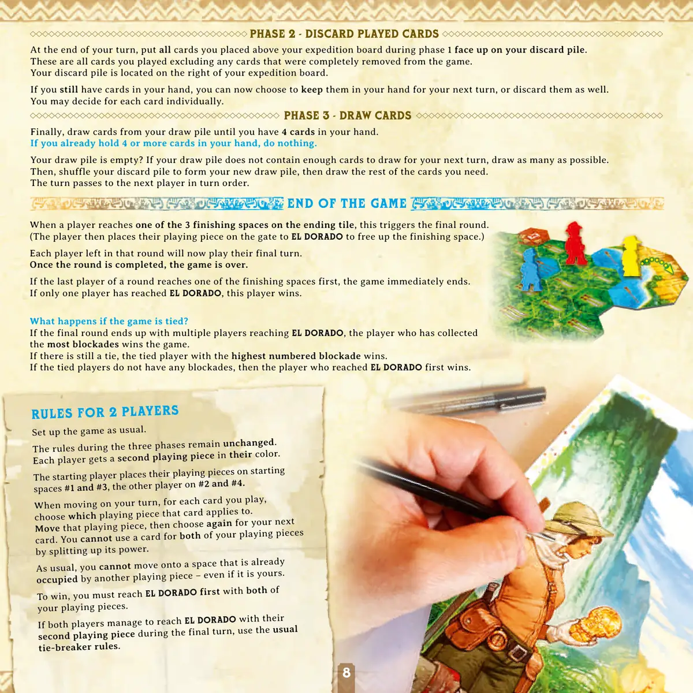
📝 第 8 页 AI 机翻对照（点击展开）
第2阶段 - 弃置已打出的卡牌
当玩家到达终点板块上的3个终点空间之一时，这将触发最后一轮。
（然后玩家将其棋子放在通往黄金国(EL DORADO)的城门上，以释放终点空间。）
该轮剩下的每位玩家现在将进行他们的最终回合。
一旦该轮结束，游戏即结束。
如果一轮的最后一位玩家首先到达某个终点空间，游戏立即结束。
如果只有一位玩家到达了黄金国，则该玩家获胜。
如果游戏出现平局怎么办？
如果最后一轮有多位玩家到达黄金国，则收集最多路障的玩家赢得游戏。
如果仍然平局，则拥有编号最高路障的平局玩家获胜。
如果平局玩家没有任何路障，则最先到达黄金国的玩家获胜。
第3阶段 - 摸牌
游戏结束
2人游戏规则
像平常一样设置游戏。
三个阶段的规则保持不变。
每位玩家获得第二个自己颜色的棋子。
起始玩家将其棋子放在起始空间#1和#3上，另一位玩家放在#2和#4上。
在你的回合移动时，对于每张打出的卡牌，选择该卡牌适用于哪个棋子。
移动那个棋子，然后为你的下一张卡牌再次选择。你不能通过拆分其能力将一张卡牌用于两个棋子。
和往常一样，你不能移动到已被另一个棋子占据的空间——即使它是你自己的。
要获胜，你必须先用两个棋子都到达黄金国。
如果两位玩家都在最终回合期间用第二个棋子设法到达黄金国，则使用常规的平局决胜规则。
最后，从你的牌库摸牌，直到手中有4张卡牌。
如果你手中已经持有4张或更多卡牌，则什么都不做。
你的牌库空了？如果你的牌库中没有足够的卡牌供你下一回合摸牌，则尽可能多地摸牌。
然后，洗混你的弃牌堆形成你的新牌库，然后摸取你需要的剩余卡牌。
回合传递给按顺序的下一位玩家。
在你的回合结束时，将你在第1阶段放在你的远征版图上方的所有卡牌正面朝上放到你的弃牌堆上。
这些是你打出的所有卡牌，不包括任何已完全从游戏中移除的卡牌。
你的弃牌堆位于你的远征版图右侧。
如果你手中还有卡牌，你现在可以选择将它们保留在手中供下一回合使用，或者也将它们弃置。
你可以为每张卡牌单独决定。
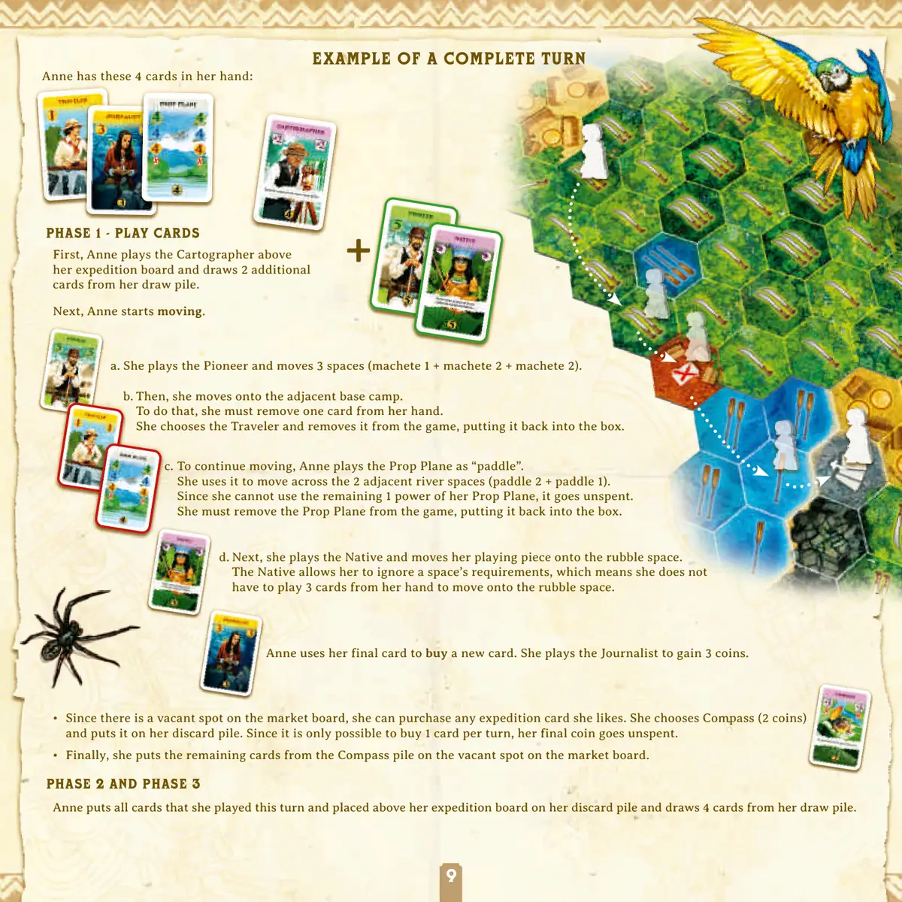
📝 第 9 页 AI 机翻对照（点击展开）
完整回合示例
Anne的手中有这4张牌：
第一阶段 - 出牌
接下来，Anne开始移动。
第二阶段和第三阶段
Anne将她本轮打出并放置在她探险版图上方的所有牌放入她的弃牌堆，并从牌库中摸4张牌。
首先，Anne将制图师(Cartographer)放置在她的探险版图上方，并从她的牌库中额外摸2张牌。
+
a. 她打出先驱者(Pioneer)并移动3格（砍刀1 + 砍刀2 + 砍刀2）。
b. 然后，她移动到相邻的营地。为此，她必须从手牌中移除一张牌。她选择了旅行者(Traveler)并将其从游戏中移除，放回盒中。
c. 为了继续移动，Anne将飞机(Prop Plane)作为"桨"打出。她用它穿过2个相邻的河流格（桨2 + 桨1）。由于她无法使用飞机剩余的1点力量，这点力量未被使用。她必须将飞机从游戏中移除，放回盒中。
d. 接下来，她打出土著(Native)并将她的棋子移动到废墟格。土著允许她忽略一格的要求，这意味着她不必打出3张牌就能移动到废墟格。
Anne用她的最后一张牌购买一张新牌。她打出记者(Journalist)获得3枚金币。
• 由于市场版图上有一个空位，她可以购买任何她喜欢的探险牌。她选择了指南针(Compass)（2枚金币）并将其放在她的弃牌堆上。由于每回合只能购买1张牌，她最后的1枚金币未被使用。
• 最后，她将指南牌堆中剩余的牌放在市场版图的空位上。
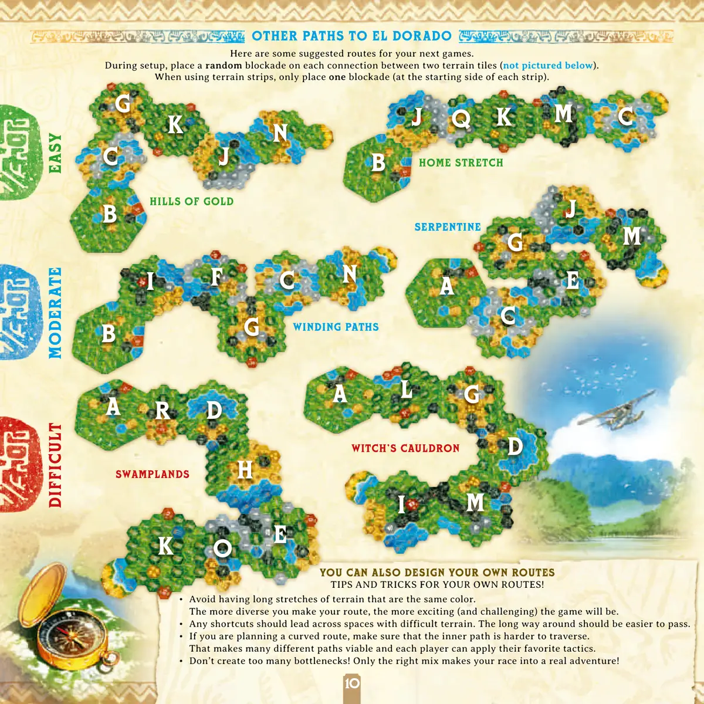
📝 第 10 页 AI 机翻对照（点击展开）
其他通往黄金城(EL DORADO)的路径
以下是一些为你的下一局游戏建议的路线。
在设置时，在每个地形板块之间的连接处放置一个随机路障（下图未显示）。
当使用地形条时，只放置一个路障（在每个条的开始处）。
你也可以设计自己的路线
设计自己路线的小技巧！
• 避免出现相同颜色地形的漫长路段。你的路线越多样化，游戏就会越刺激（且具有挑战性）。
• 任何捷径都应该穿过地形困难的格。绕远路应该更容易通过。
• 如果你计划设计一条弯曲的路线，确保内侧路径更难穿越。这使得许多不同的路径都可行，每个玩家都可以应用自己喜欢的策略。
• 不要制造太多瓶颈！只有合适的搭配才能让你的竞赛变成真正的冒险！
中等难度
简单
困难
黄金山丘(HILLS OF GOLD)
最后冲刺(HOME STRETCH)
蜿蜒小径(WINDING PATHS)
女巫的大锅(WITCH'S CAULDRON)
蜿蜒曲折(SERPENTINE)
沼泽地(SWAMPLANDS)
B
B
B
A
A
A
C
C
C
C
D
D
E
E
F
G
G
G
G
H
I
I
J
J
J
K
K
K
L
M
M
M
N
O
N
R
Q
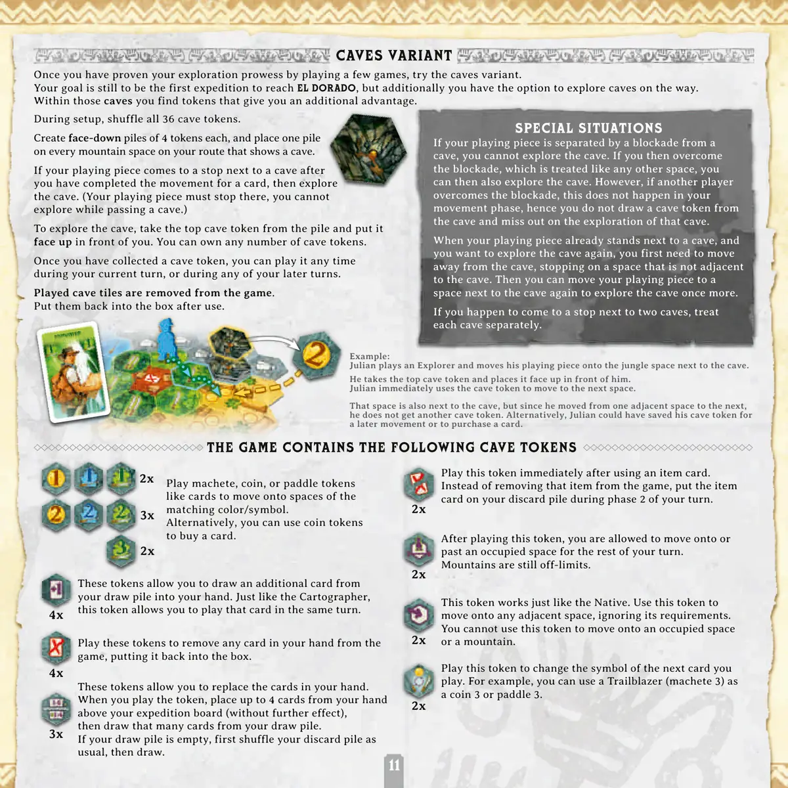
📝 第 11 页 AI 机翻对照（点击展开）
洞穴变体
在你通过玩了几局游戏证明了自己的探索技巧后，尝试洞穴变体。
你的目标仍然是第一个到达黄金国(EL DORADO)的探险队，但此外你还有机会在途中探索洞穴。
在这些洞穴中，你会找到能给你带来额外优势的指示物。
在设置时，洗混所有36个洞穴指示物。
创建每堆4个指示物的面朝下的牌堆，并将每个牌堆
放在你路线上显示有洞穴的每个山地空间上。
如果你的棋子在完成一张牌的移动后停在洞穴旁边，那么就探索该洞穴。（你的棋子必须停在那里，你不能在经过洞穴时进行探索。）
要探索洞穴，从牌堆中拿取顶部的洞穴指示物，并将其面朝上放在你面前。你可以拥有任意数量的洞穴指示物。
一旦你收集了一个洞穴指示物，你可以在你当前回合的任何时候，或在你之后的任何回合中使用它。
已使用的洞穴指示物会从游戏中移除。
使用后将它们放回盒中。
特殊情况
如果你的棋子被路障与洞穴隔开，你不能探索该洞穴。如果你随后克服了路障（路障被视为任何其他空间），你也可以探索洞穴。然而，如果其他玩家克服了路障，这不会在你的移动阶段发生，因此你不会从洞穴中抽取洞穴指示物，也错过了对该洞穴的探索。
当你的棋子已经停在洞穴旁边，而你想要再次探索洞穴时，你首先需要远离洞穴，停在一个不与洞穴相邻的空间上。然后你可以再次将你的棋子移动到洞穴旁边的空间，以再次探索洞穴。
如果你恰好停在两个洞穴旁边，分别处理每个洞穴。
示例：
朱利安(Julian)打出一张探险家(Explorer)牌，并将他的棋子移动到洞穴旁边的丛林空间。
他拿取顶部的洞穴指示物，并将其面朝上放在自己面前。
朱利安立即使用洞穴指示物移动到下一个空间。
该空间也位于洞穴旁边，但由于他从一个相邻空间移动到下一个相邻空间，他没有获得另一个洞穴指示物。或者，朱利安可以将他的洞穴指示物留待之后的移动或购买卡牌时使用。
像使用卡牌一样，使用砍刀( machete)、硬币(coin)或船桨(paddle)指示物
移动到匹配颜色/符号的空间上。
或者，你可以使用硬币指示物
购买一张卡牌。
游戏包含以下洞穴指示物
2x
3x
2x
这些指示物允许你从你的牌库中额外抽取一张牌到手牌中。就像地图绘制师(Cartographer)一样，这个指示物允许你在同一回合中使用那张牌。
4x
使用这些指示物移除你手牌中的任何一张牌，将其从游戏中移除，放回盒中。
4x
这些指示物允许你替换你手中的卡牌。
当你使用这个指示物时，从你手中放置最多4张卡牌
在你的探险版图上方（没有进一步效果），
然后从你的牌库中摸取相同数量的卡牌。
如果你的牌库为空，先像往常一样洗混你的弃牌堆，
然后摸牌。
3x
在使用一张物品卡牌后立即使用这个指示物。
不要将那个物品从游戏中移除，而是在你回合的第2阶段
将那张物品卡牌放到你的弃牌堆中。
2x
在使用这个指示物后，在你的回合剩余时间内，
你被允许移动到或越过已被占据的格。
山脉仍然禁止通行。
2x
这个指示物的作用与原住民指示物完全相同。使用这个指示物
可以移动到任何相邻的格，忽略其要求。
你不能使用这个指示物移动到已被占据的格或山脉上。
2x
使用这个指示物来改变你下一张打出卡牌的符号。
例如，你可以使用一个开拓者（砍刀3）作为
一个金币3或船桨3。
2x
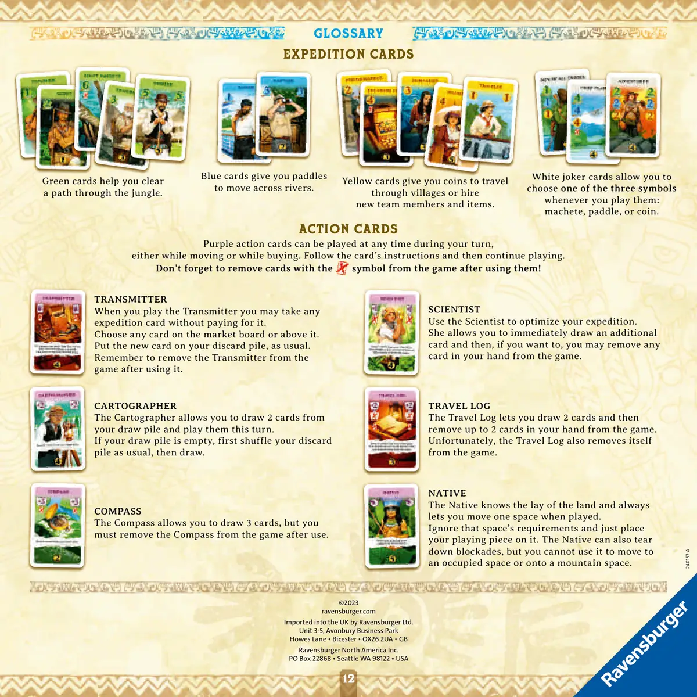
📝 第 12 页 AI 机翻对照（点击展开）
词汇表
探险卡牌
绿色卡牌帮助你清除
穿过丛林的路径。
蓝色卡牌给你船桨
以便穿越河流。
黄色卡牌给你金币，让你能够
穿过村庄或雇佣
新的团队成员和物品。
白色百搭卡牌允许你在
打出它们时选择三种符号之一：
砍刀、船桨或金币。
行动卡牌
紫色行动卡牌可以在你的回合期间的
任何时候打出，无论是在移动时还是在购买时。
遵循卡牌的说明，然后继续游戏。
不要忘记在使用后带有
符号的卡牌从游戏中移除！
发报机
当你打出发报机时，你可以免费获取
任意一张探险卡牌。
选择市场版图上或其上方的任意卡牌。
像往常一样将新卡牌放到你的弃牌堆上。
记得在使用后将发报机从游戏中移除。
地图绘制师
地图绘制师允许你从你的牌库中抽取2张卡牌
并在本回合打出它们。
如果你的牌库为空，先像往常一样洗弃牌堆，
然后抽牌。
指南针
指南针允许你抽取3张卡牌，但使用后
你必须将指南针从游戏中移除。
科学家
使用科学家来优化你的探险。
她允许你立即额外抽取一张卡牌，
然后，如果你愿意，你可以将手牌中的
任意一张卡牌从游戏中移除。
旅行日志
旅行日志让你抽取2张卡牌，然后可以将手牌中
最多2张卡牌从游戏中移除。
不幸的是，旅行日志也会将自己从游戏中移除。
土著
土熟悉地形，打出时总是
让你移动一格。
忽略该格的要求，只需将你的棋子放在上面。
土著也可以拆除路障，但你不能用它移动到
已被占据的格子或山地区域。
©2023
ravensburger.com
由Ravensburger Ltd.进口英国
Avonbury Business Park, Unit 3-5, Howes Lane • Bicester • OX26 2UA • GB
Ravensburger North America Inc.
PO Box 22868 • Seattle WA 98122 • USA
240157-A